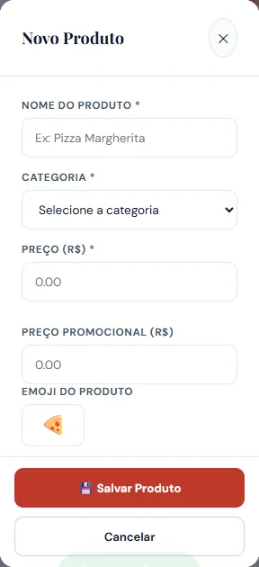
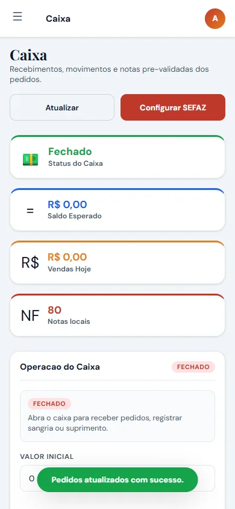
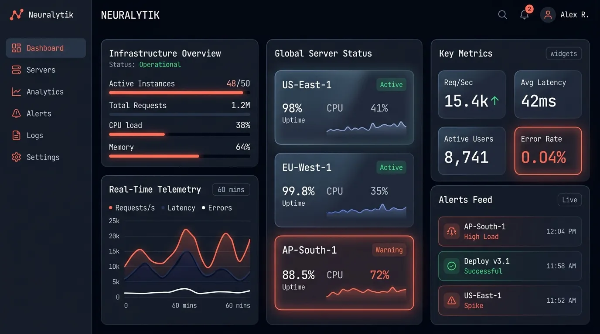
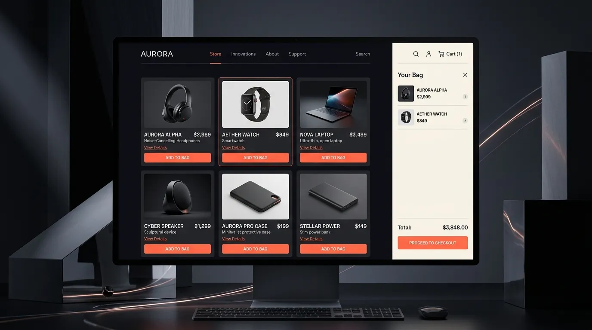
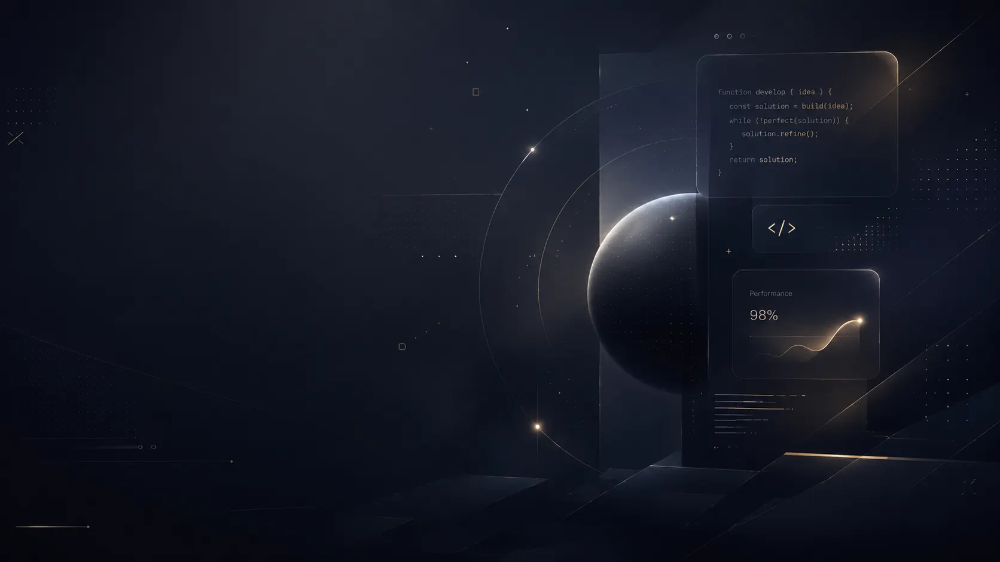

MORADA
DA PIZZA
Uma operação digital conectada: cardápio, pedidos, caixa, cadastros e fluxo interno em um único sistema.


- Cardápio responsivo
- Painel administrativo
- Caixa & operação
- Infraestrutura web
Eu transformo processos reais em sistemas claros, rápidos e feitos para crescer.
Explorar↓Software não precisa parecer complicado. A SoftTec cria experiências digitais que organizam a operação, automatizam o repetitivo e deixam o negócio pronto para o próximo passo.
Design chama a atenção. Sistema bem construído segura a operação. A SoftTec entrega os dois no mesmo produto.
[ Ideia → produto → operação ]
Design que chama atenção.
Tecnologia que aguenta o trabalho.
Sistemas que não ficam parados. Eles recebem dados, tomam forma e acompanham o crescimento do negócio.
Antes da reunião começar, a percepção de valor já começou. A experiência abre a porta; o sistema prova que existe engenharia por trás dela.
Uma operação digital conectada: cardápio, pedidos, caixa, cadastros e fluxo interno em um único sistema.


Plataforma analítica e telemetria de alta densidade: monitoramento de instâncias, latência global e métricas de infraestrutura em tempo real.

Experiência de e-commerce minimalista e ultra-veloz: checkout instantâneo, catálogo dinâmico e microinterações cinematográficas.

Uma solução boa junta tecnologia, clareza e uso real. Não construo só telas: construo o caminho inteiro.
Ferramentas feitas ao redor do processo do seu negócio.
Interfaces rápidas, fortes e pensadas para comunicar valor.
Informação organizada e integrações que conversam entre si.
Menos trabalho repetitivo e uma base pronta para crescer.
Ferramentas escolhidas para entregar, manter e evoluir — sem empilhar tecnologia só para parecer sofisticado.
Micro-módulos e telemetria construídos com APIs nativas da web moderna.
Medição dinâmica de framerate e render loop da sua GPU.
Alterne a temperatura de luz e os shaders do estúdio.
Geração de hashes SHA e decodificação contínua.
0x7F_4A99C2_SOFTTEC_STREAM

Na SoftTec, eu junto visão de negócio e desenvolvimento para criar ferramentas que façam sentido no dia a dia.
Da ideia à publicação, cada escolha precisa ter um motivo: facilitar, acelerar, organizar ou abrir espaço para crescer.
O sistema acompanha o processo real em vez de obrigar o negócio a caber numa ferramenta genérica.
Visual, velocidade e microinterações criam percepção de valor antes mesmo da primeira conversa.
Estrutura pensada para ganhar novas funções, integrações e automações conforme a operação cresce.
[ Não é só presença digital ]